pacman::p_load(tidyverse, sf, sfdep, spdep, tmap, knitr, rvest, ggplot2, viridis, Kendall)Take-home Exercise 2: Urban Mobility Pattern Analysis
1 Introduction
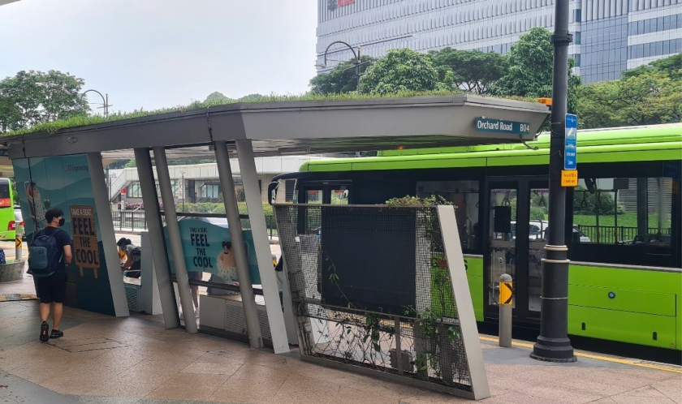
via: Land Transport Authority (LTA)
1.1 Overview
Urban mobility refers to how people and goods move within and between cities through modes such as walking, cycling, public transit, and private vehicles. With rapid urbanisation and growing transport demand, cities are more reliant on data-driven planning to enhance accessibility, reduce congestion, and promote sustainability. The availability of spatial datasets, such as bus passenger volumes from LTA DataMall may offers new opportunities to understand mobility dynamics and support smarter transport policies.
1.2 Objectives
This exercise explores how Local Measures of Spatial Autocorrelation (LMSA) and Emerging Hot Spot Analysis (EHSA) can reveal spatial and spatio-temporal patterns in bus passenger trips across Singapore.
The key objectives are:
Identify local clusters and spatial outliers of passenger trip volumes using LMSA.
Detect evolving hot and cold spots of travel demand across different time periods using EHSA.
Interpret how these spatial patterns inform more efficient and equitable urban mobility and land-use planning.
2 Getting Started
2.1 The Packages
In this exercise, we will use following packages:
| Package | Description |
|---|---|
| sf | Provides functions to manage, processing, and manipulate Simple Features, a formal geospatial data standard that specifies a storage and access model of spatial geometries such as points, lines, and polygons. |
| tidyverse | Provides collection of functions for performing data science task such as importing, tidying, wrangling data and visualising data. |
| tmap | Provides functions for plotting cartographic quality static point patterns maps or interactive maps by using leaflet API. |
| sfdep | An interface to ‘spdep’ to integrate with ‘sf’ objects and the ‘tidyverse’. |
| spdep | A collection of functions to create spatial weights matrix objects from polygon ‘contiguities’ |
| knitr | Provides a general-purpose tool for dynamic report generation in R using Literate Programming techniques. |
| rvest | Wrappers around the ‘xml2’ and ‘httr’ packages to make it easy to download, then manipulate, HTML and XML. |
| ggplot2 | Provides graphics plots and mappings. |
| viridis | Color maps designed to improve graph readability. |
| Kendall | Kendall Rank Correlation and Mann-Kendall Trend Test. |
2.2 Datasets
| Dataset Name | Description | Format | Source |
|---|---|---|---|
| Passenger Volume by Origin Destination Bus Stops | Returns number of trips by weekdays and weekends from the origin to destination bus stops. | JSON/CSV | LTA DataMall |
| Bus Stop Location | A point representation to indicate the position where buses should stop to pick up or drop off passengers. | SHP | LTA DataMall |
| Singapore Master Plan 2019 (URA) Zoning Data | Singapore’s land-use zones: residential, commercial, mixed-use, industrial. | KML | data.gov.sg |
2.3 Importing datasets to R environment
First, we will load Bus Stop Location data using st_read().
BusStop = st_read(dsn = "data/ltadata/",
layer = "BusStop") %>%
st_transform(crs = 3414)Reading layer `BusStop' from data source
`C:\sonphamsmu\isss626-aug2526\Take-home_Ex\Take-home_Ex2\data\ltadata'
using driver `ESRI Shapefile'
Simple feature collection with 5172 features and 2 fields
Geometry type: POINT
Dimension: XY
Bounding box: xmin: 3970.122 ymin: 26482.1 xmax: 48285.52 ymax: 52983.82
Projected CRS: SVY21Next, Singapore Zoning Data will be loaded. Note that we will select SVY21 (EPSG:3414), which is the standard projected coordinate system of Singapore for this exercise.
mpsz <- st_read("data/geospatial/MasterPlan2019SubzoneBoundaryNoSeaKML.kml") %>%
st_transform(crs = 3414)Reading layer `URA_MP19_SUBZONE_NO_SEA_PL' from data source
`C:\sonphamsmu\isss626-aug2526\Take-home_Ex\Take-home_Ex2\data\geospatial\MasterPlan2019SubzoneBoundaryNoSeaKML.kml'
using driver `KML'
Simple feature collection with 332 features and 2 fields
Geometry type: MULTIPOLYGON
Dimension: XY
Bounding box: xmin: 103.6057 ymin: 1.158699 xmax: 104.0885 ymax: 1.470775
Geodetic CRS: WGS 84Relevant attributes were extracted from the HTML description for each polygon, including region, planning area, subzone name, and subzone code. Unnecessary columns were removed, and the geometry column was moved to the end for a tidy data structure.
extract_kml_field <- function(html_text, field_name) {
if (is.na(html_text) || html_text == "") return(NA_character_)
page <- read_html(html_text)
rows <- page %>% html_elements("tr")
value <- rows %>%
keep(~ html_text2(html_element(.x, "th")) == field_name) %>%
html_element("td") %>%
html_text2()
if (length(value) == 0) NA_character_ else value
}mpsz <- mpsz %>%
mutate(
REGION_N = map_chr(Description, extract_kml_field, "REGION_N"),
PLN_AREA_N = map_chr(Description, extract_kml_field, "PLN_AREA_N"),
SUBZONE_N = map_chr(Description, extract_kml_field, "SUBZONE_N"),
SUBZONE_C = map_chr(Description, extract_kml_field, "SUBZONE_C")
) %>%
select(-Name, -Description) %>%
relocate(geometry, .after = last_col())The cleaned and processed subzone boundary dataset was saved as an .rds file for faster loading and reproducible analysis in later steps.
write_rds(mpsz, "data/rds/mpsz.rds")Next, we will import Passenger Volume by Origin Destination Bus Stops using read_csv() function.
odbus <- read_csv("data/ltadata/origin_destination_bus_202508.csv")Since there are a few bus stops that are located outside of Singapore boundary (Woodlands Checkpoint for example), we want to extract Bus Stops that stay within SG’s boundary for simplification.
BusStop_in_SG <- st_join(
BusStop, mpsz,
join = st_within,
left = FALSE)tm_shape(mpsz) +
tm_polygons() +
tm_shape(BusStop_in_SG) +
tm_dots()
3 Hexagon Grid Creation & Trips Data Preparation
3.1 Creating Hexagon Grid
Deriving Analytical Hexagon
A hexagonal grid with a 375m cell size (to represent the traffic analysis zone (TAZ)) was generated to represent analytical zones across Singapore. It covers the extent of the Master Plan 2019 subzones.
hexagon <- st_make_grid(mpsz,
cellsize = 375,
what = "polygon",
square = FALSE) %>%
st_sf()Filtering hexagons with bus stops
Each hexagon was checked for intersections with bus stop locations. Only hexagons containing at least one bus stop were retained, ensuring that the analysis focuses on relevant transport activity zones.
hexagon$n_collisions =
lengths(st_intersects(
hexagon, BusStop_in_SG))
hexagon <- filter(hexagon, n_collisions > 0)Assigning IDs to each hexagon
Unique identifiers (HEX_ID) were assigned to each valid hexagon to support spatial joins and temporal aggregation in later analysis. The resulting hexagon dataset serves as the base spatial framework for calculating passenger trip volumes and performing LMSA and EHSA.
hexagon <- hexagon %>%
select(, -n_collisions) #optional can remove
hexagon$HEX_ID <- sprintf(
"H%04d", seq_len(nrow(hexagon))) %>%
as.factor()
kable(head(hexagon))| geometry | HEX_ID |
|---|---|
| POLYGON ((3792.538 27873.08… | H0001 |
| POLYGON ((4542.538 28522.6,… | H0002 |
| POLYGON ((4542.538 30471.15… | H0003 |
| POLYGON ((4542.538 31120.67… | H0004 |
| POLYGON ((4730.038 28197.84… | H0005 |
| POLYGON ((4730.038 30146.39… | H0006 |
3.2 Trip Generation Data Preparation
Cleaning the data
We will select and rename key fields to focus on origin bus stop, day type, hour, and total trips. Converted bus stop codes to factor type for consistent joins and aggregation later.
trips <- odbus %>%
select(c(ORIGIN_PT_CODE, DAY_TYPE, TIME_PER_HOUR, TOTAL_TRIPS)) %>%
rename(BUS_STOP_N = ORIGIN_PT_CODE) %>%
rename(HOUR_OF_DAY = TIME_PER_HOUR) %>%
rename(TRIPS = TOTAL_TRIPS)
trips$BUS_STOP_N <- as.factor(trips$BUS_STOP_N)
kable(head(trips))| BUS_STOP_N | DAY_TYPE | HOUR_OF_DAY | TRIPS |
|---|---|---|---|
| 84671 | WEEKENDS/HOLIDAY | 9 | 3 |
| 10099 | WEEKENDS/HOLIDAY | 13 | 31 |
| 64601 | WEEKENDS/HOLIDAY | 21 | 3 |
| 53009 | WEEKENDS/HOLIDAY | 16 | 10 |
| 80051 | WEEKENDS/HOLIDAY | 18 | 4 |
| 70031 | WEEKDAY | 14 | 1 |
Perform a spatial intersection between bus stops and the analytical hexagon grid to assign each bus stop to a unique HEX_ID. This creates a lookup table linking stops to zones.
bs_hex <- st_intersection(
BusStop, hexagon) %>%
st_drop_geometry() %>%
select(c(BUS_STOP_N, HEX_ID))
kable(head(bs_hex))| BUS_STOP_N | HEX_ID | |
|---|---|---|
| 3092 | 25059 | H0001 |
| 2439 | 25751 | H0002 |
| 241 | 26379 | H0003 |
| 2258 | 26369 | H0004 |
| 2554 | 25761 | H0005 |
| 3611 | 26389 | H0006 |
Adding HEX_ID into bus trips data: merge the HEX_ID information into the trip dataset, allowing each trip record to be spatially referenced to a specific hexagon zone.
trips <- inner_join(trips, bs_hex)
kable(head(trips))| BUS_STOP_N | DAY_TYPE | HOUR_OF_DAY | TRIPS | HEX_ID |
|---|---|---|---|---|
| 84671 | WEEKENDS/HOLIDAY | 9 | 3 | H2023 |
| 10099 | WEEKENDS/HOLIDAY | 13 | 31 | H0961 |
| 64601 | WEEKENDS/HOLIDAY | 21 | 3 | H1639 |
| 53009 | WEEKENDS/HOLIDAY | 16 | 10 | H1330 |
| 80051 | WEEKENDS/HOLIDAY | 18 | 4 | H1519 |
| 70031 | WEEKDAY | 14 | 1 | H1582 |
Aggregating TRIPS based on HEX_ID: In the code chunk below, group_by() and summarise() is used to aggregate TRIPS by HEX_ID, DAY_TYPE and HOUR_OF_DAY.
trips <- trips %>%
group_by(
HEX_ID,
DAY_TYPE,
HOUR_OF_DAY) %>%
summarise(TRIPS = sum(TRIPS))3.3 Trip Aggregation by Time Period
We will refer to the time intervals provided in the table below to compute the passenger trips generated by origin at the hexagon level.
| Peak hour period | Bus tap on time |
|---|---|
| Weekday morning peak | 6am to 9am |
| Weekday afternoon peak | 5pm to 8pm |
| Weekend/holiday | 11am to 8pm |
Classify windows & clean hour
We convert HOUR_OF_DAY to integer and tagged each record into one of the three analysis windows (WKDAY_AM, WKDAY_PM, WKEND_HOL). Records outside the windows are dropped to keep only relevant demand.
is_weekend_or_holiday <- function(x) {
str_detect(str_to_upper(x), "WEEKEND|HOLIDAY|PH")
}
trips <- trips %>%
mutate(HOUR_OF_DAY = as.integer(HOUR_OF_DAY))We will group by HEX_ID and WINDOW, sum TRIPS to convert into each time window.
trips_window <- trips %>%
mutate(
WINDOW = case_when(
!is_weekend_or_holiday(DAY_TYPE) & HOUR_OF_DAY >= 6 & HOUR_OF_DAY <= 9 ~ "WKDAY_AM",
!is_weekend_or_holiday(DAY_TYPE) & HOUR_OF_DAY >= 17 & HOUR_OF_DAY <= 20 ~ "WKDAY_PM",
is_weekend_or_holiday(DAY_TYPE) & HOUR_OF_DAY >= 11 & HOUR_OF_DAY <= 20 ~ "WKEND_HOL",
TRUE ~ NA_character_
)
) %>%
filter(!is.na(WINDOW))Pivot to one row per HEX_ID with columns WKDAY_AM, WKDAY_PM, WKEND_HOL, and computed an overall TRIPS_TOTAL for quick reference. We also verify totals across windows to catch anomalies before mapping or running spatial statistics.
hex_by_window <- trips_window %>%
group_by(HEX_ID, WINDOW) %>%
summarise(TRIPS = sum(TRIPS, na.rm = TRUE), .groups = "drop")
hex_trips <- hex_by_window %>%
pivot_wider(
names_from = WINDOW,
values_from = TRIPS,
values_fill = 0
) %>%
mutate(TRIPS_TOTAL = rowSums(across(c(WKDAY_AM, WKDAY_PM, WKEND_HOL)), na.rm = TRUE))
hex_trips %>%
summarise(across(c(WKDAY_AM, WKDAY_PM, WKEND_HOL, TRIPS_TOTAL), sum, na.rm = TRUE))# A tibble: 1 × 4
WKDAY_AM WKDAY_PM WKEND_HOL TRIPS_TOTAL
<dbl> <dbl> <dbl> <dbl>
1 25201416 24694380 20844707 70740503Left-joined the aggregated table back to the hexagon sf layer by HEX_ID, producing hex_trips_sf as the spatial dataset we will use to map and feed into LMSA/EHSA. After that we will save the output into .rds and .csv files for later use.
hex_trips_sf <- hexagon %>%
select(HEX_ID) %>%
left_join(hex_trips, by = "HEX_ID") %>%
mutate(across(c(WKDAY_AM, WKDAY_PM, WKEND_HOL, TRIPS_TOTAL), ~ replace_na(., 0)))saveRDS(hex_trips_sf, "data/rds/hex_trips_by_period.rds")
write_csv(st_drop_geometry(hex_trips_sf), "data/rds/hex_trips_by_period.csv")3.4 Visualization & Exploratory Data Analysis (EDA)
In this step we will plot a simple heat map by using hex_trips_sf layer and ggplot() to have an overview look on the distribution of bus trips.
plot_trip_map <- function(data, var, title, subtitle) {
ggplot() +
geom_sf(data = mpsz, fill = "grey95", color = "white", size = 0.1) +
geom_sf(data = data, aes_string(fill = var), color = NA) +
scale_fill_viridis(option = "C", trans = "sqrt", name = "Trips") +
labs(title = title,
subtitle = subtitle,
caption = "Source: LTA DataMall (Passenger Volume by OD Bus Stops)") +
theme_minimal() +
theme(
plot.title = element_text(face = "bold", size = 14),
plot.subtitle = element_text(size = 12),
legend.position = "bottom",
legend.key.width = unit(2, "cm"),
axis.text = element_text(size = 10),
panel.grid = element_blank()
)
}
p_am <- plot_trip_map(
hex_trips_sf, "WKDAY_AM",
"Weekday Morning Peak (06:00 – 09:00)",
"Passenger Trips by Origin (Hexagon Level)"
)
p_pm <- plot_trip_map(
hex_trips_sf, "WKDAY_PM",
"Weekday Afternoon Peak (17:00 – 20:00)",
"Passenger Trips by Origin (Hexagon Level)"
)
p_wknd <- plot_trip_map(
hex_trips_sf, "WKEND_HOL",
"Weekend / Holiday (11:00 – 20:00)",
"Passenger Trips by Origin (Hexagon Level)"
)
p_am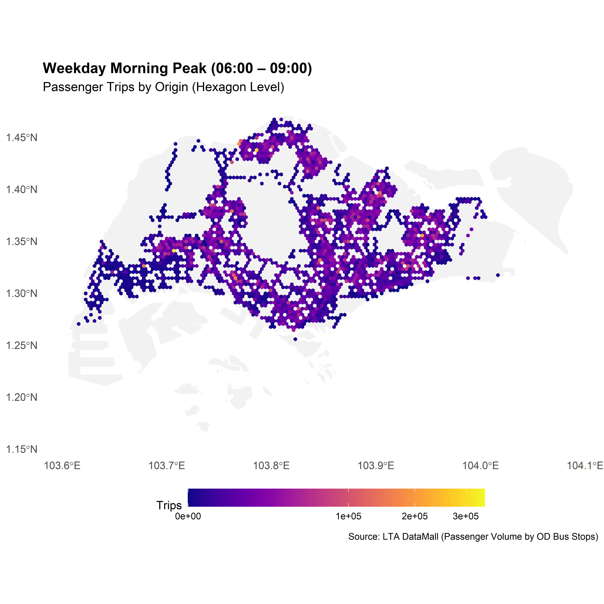
p_pm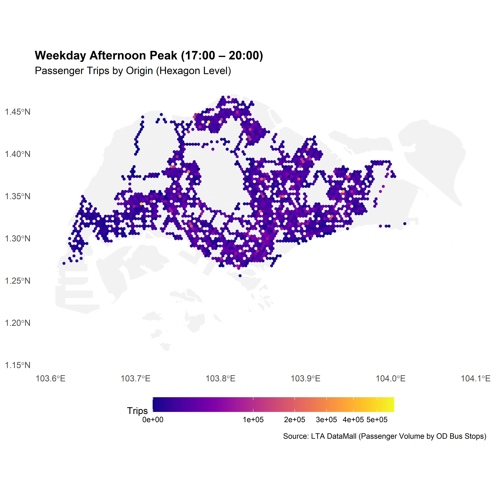
p_wknd
Obsevation
The spatial distribution of passenger trips shows clear variations across Singapore.
During Weekday morning peak (06:00 - 09:00), the most intensive origin activity is concentrated in the north and northeast residential towns such as Woodlands, Yishun, Punggol, and Sengkang, reflecting outbound commuting flows toward employment zones in the Central Region. Peripheral areas with low residential density (e.g., western industrial estates and southern coastal zones) show minimal activity.
In the Weekday afternoon peak (17:00 - 20:00) period, the high-origin zones shift toward the Central and Eastern regions, indicating return trips from workplaces and schools. Moderate activity is also observed in suburban interchange areas (e.g., Tampines, Jurong East), representing redistribution during evening travel peaks.
On Weekends/Holidays (11:00 - 20:00), trip origins are more spatially dispersed, with hotspots emerging near town centres, shopping districts (e.g., Orchard, Tampines), and recreation hubs (e.g., Sentosa, East Coast Park). The distribution suggests leisure-driven and discretionary mobility patterns.
4 Local Measures of Spatial Association (LMSA)
4.1 Create neighbor list
Constructed a spatial weights matrix using queen contiguity, where hexagons sharing any border or vertex are treated as neighbors. This defines the spatial relationships needed for local autocorrelation analysis.
build_neighbors <- function(sf_obj) {
nb <- poly2nb(sf_obj, queen = TRUE)
lw <- nb2listw(nb, style = "W", zero.policy = TRUE)
list(nb = nb, lw = lw)
}
nbw <- build_neighbors(hex_trips_sf)4.2 Compute Local Moran’s I
We compute Local Moran’s I to detect spatial autocorrelation at each hexagon. Significant positive I-values indicate clusters of similar values (High-High or Low-Low), while negative I-values indicate spatial outliers (High-Low or Low-High).
(Note: Lines for computing Getis-Ord Gi* statistic was also added and will be used in later part).
compute_lmsa <- function(sf_obj, var) {
x <- sf_obj[[var]] |> as.numeric()
lisa <- localmoran(x, nbw$lw, zero.policy = TRUE)
out <- sf_obj %>%
mutate(
!!paste0(var, "_I") := lisa[,1],
!!paste0(var, "_Ip") := lisa[,5],
!!paste0(var, "_CLS") := case_when(
lisa[,5] < 0.05 & lisa[,1] > 0 & x > mean(x, na.rm=TRUE) ~ "High-High",
lisa[,5] < 0.05 & lisa[,1] > 0 & x < mean(x, na.rm=TRUE) ~ "Low-Low",
lisa[,5] < 0.05 & lisa[,1] < 0 & x > mean(x, na.rm=TRUE) ~ "High-Low",
lisa[,5] < 0.05 & lisa[,1] < 0 & x < mean(x, na.rm=TRUE) ~ "Low-High",
TRUE ~ "Not Significant"
)
)
#Gi* (z-score + p-value)
giz <- local_gstar(x, nbw$nb, nbw$lw)
gip <- pnorm(abs(giz), lower.tail = FALSE) * 2
out <- out %>%
mutate(
!!paste0(var, "_GiZ") := giz,
!!paste0(var, "_GiP") := gip,
!!paste0(var, "_GiSIG") := if_else(gip < 0.05, "Significant", "Not Significant")
)
out
}Map LMSA Results: We generate LISA cluster map showing significant spatial associations.
map_lisa <- function(sf_obj, var, title_suffix) {
cls_col <- paste0(var, "_CLS")
tm_shape(mpsz) + tm_polygons(col="grey92", border.col="white") +
tm_shape(sf_obj) +
tm_fill(cls_col,
palette = c("High-High"="#d7191c", "Low-Low"="#2c7bb6",
"High-Low"="#fdae61", "Low-High"="#abd9e9",
"Not Significant"="#dddddd"),
drop.levels = FALSE,
title = "LISA Cluster") +
tm_borders(alpha = 0.2) +
tm_layout(main.title = paste("Local Moran’s I –", title_suffix),
legend.outside = TRUE, frame = FALSE)
}vars <- c(WKDAY_AM = "WKDAY_AM",
WKDAY_PM = "WKDAY_PM",
WKEND_HOL = "WKEND_HOL")
results <- list()
maps <- list()
for (nm in names(vars)) {
v <- vars[[nm]]
res <- compute_lmsa(hex_trips_sf, v)
results[[nm]] <- res
# Save results (RDS+CSV)
saveRDS(res, file = paste0("data/rds/lmsa_", v, ".rds"))
st_drop_geometry(res) |>
write.csv(paste0("data/rds/lmsa_", v, ".csv"), row.names = FALSE)
maps[[nm]] <- map_lisa(res, v, switch(nm,
WKDAY_AM = "Weekday morning peak (06–09)",
WKDAY_PM = "Weekday afternoon peak (17–20)",
WKEND_HOL = "Weekend/Holiday (11–20)"))
}maps$WKDAY_AM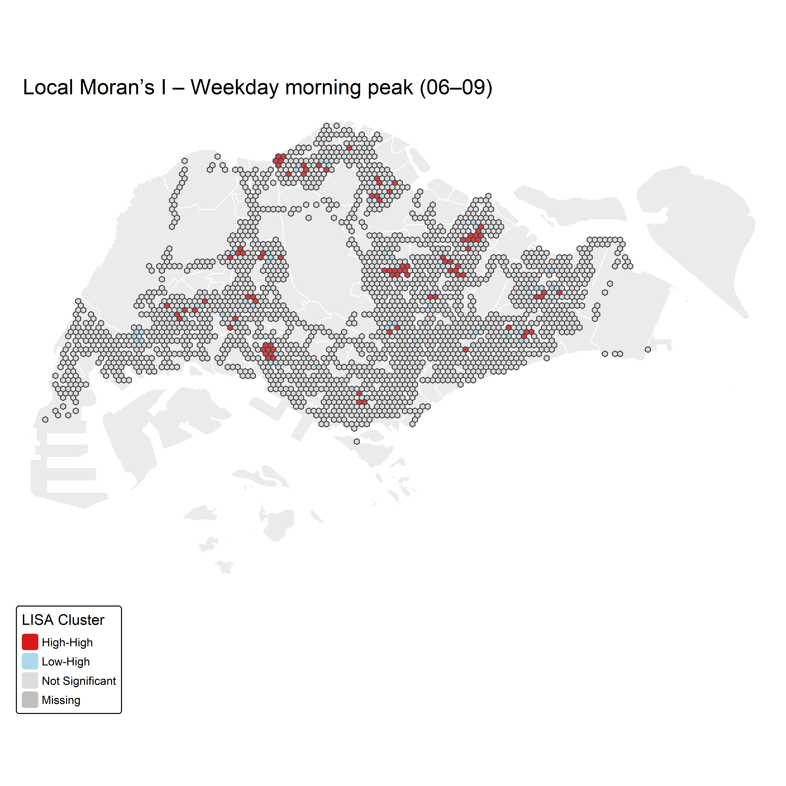
Weekday morning peak (6-9)
High-High clusters concentrated in the northern and northeastern residential towns (Woodlands, Yishun, Sengkang, and Tampines), represent strong morning origin activity surrounded by similarly high-demand neighbours. It reflects intense outbound commuting flows toward employment centres in the central region.
A few Low-High outliers appear at subzone boundaries, where individual stops show low trip counts near high-demand areas, likely due to local road or service design factors.
maps$WKDAY_PM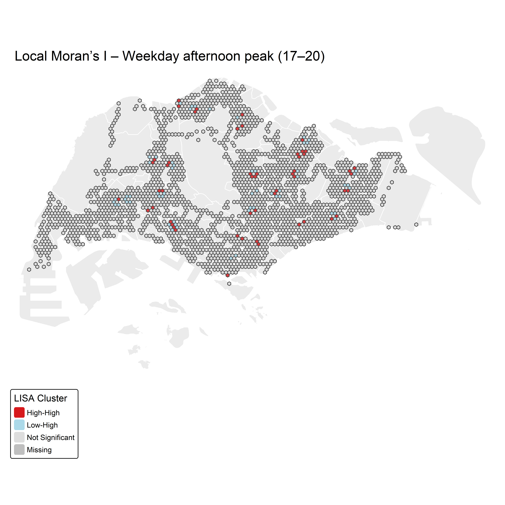
Weekday Evening Peak (17–20)
Fewer but distinct High-High clusters are visible, mainly around Tampines, Woodlands, and Jurong East. These correspond to major regional centres and interchanges, where passengers initiate return trips home after work.
The reduced number of significant clusters compared to the morning suggests that outbound commuting flows in the evening are more dispersed and possibly affected by staggered work hours or multi-stop trips.
maps$WKEND_HOL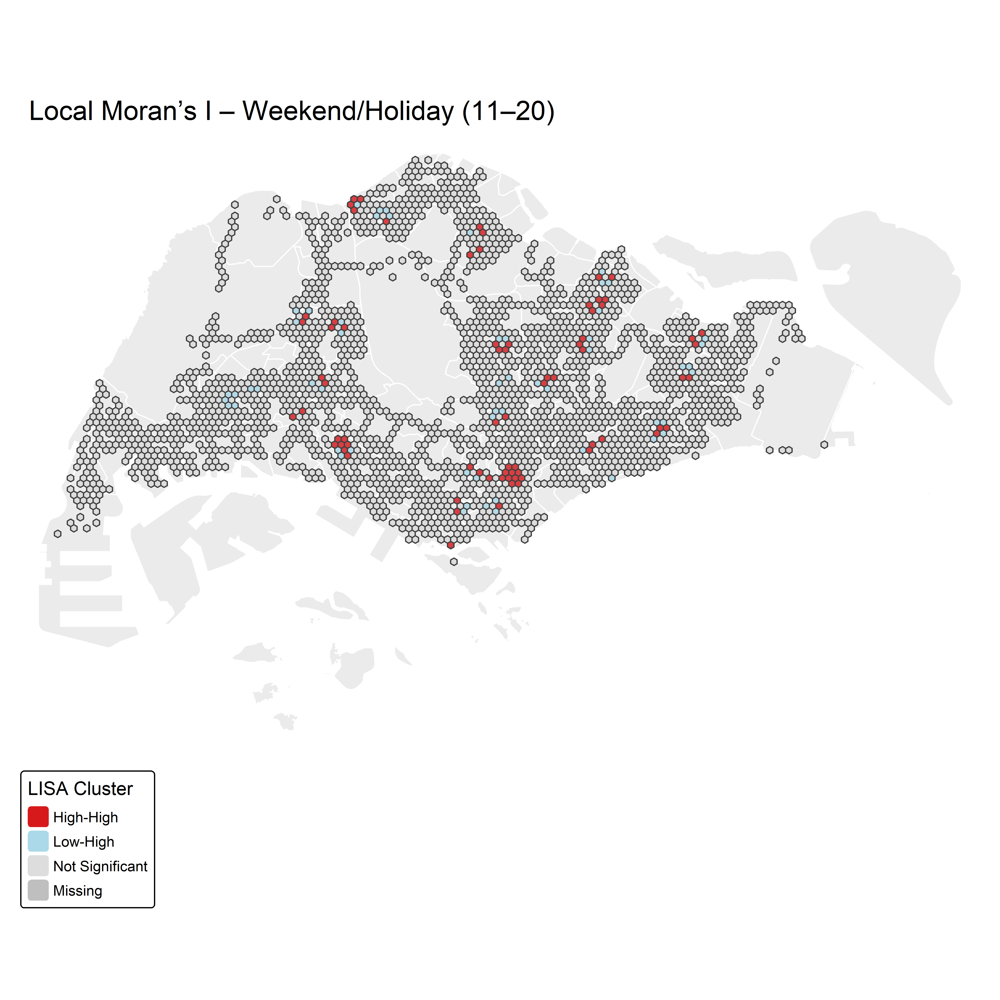
Weekend/Holiday (11-20)
The weekend map indicates High-High clusters emerging near Orchard, Downtown Core, and regional malls such as Tampines and Jurong East. Compared to weekdays, hotspots are more scattered, covering suburban town centres and recreation areas rather than residential areas. This reflects non-work trip patterns where travel originates from diverse activity hubs, confirming the spatial diversification of weekend mobility.
4.3 Getis-Ord Gi* statistic
Getis-Ord Gi* statistic will beused to locate intensity-based hotspots and coldspots, complementing Local Moran’s I. Gi* focuses purely on magnitude clustering rather than similarity of values.
We will calculate Gi* z-scores (GiZ_) and corresponding p-values (GiP_) for each period.
High positive z-scores = strong hotspots (high values surrounded by high values)
Low negative z-scores = strong coldspots (low surrounded by low)
p-values < 0.05 = statistically significant clustering
vars <- c(WKDAY_AM = "WKDAY_AM",
WKDAY_PM = "WKDAY_PM",
WKEND_HOL = "WKEND_HOL")
gi_results <- list()
for (nm in names(vars)) {
v <- vars[[nm]]
res <- compute_lmsa(hex_trips_sf, v) # this already adds GiZ, GiP, GiSIG from above
gi_results[[nm]] <- res
saveRDS(res, paste0("data/rds/gistar_", v, ".rds"))
st_drop_geometry(res) |>
write.csv(paste0("data/rds/gistar_", v, ".csv"), row.names = FALSE)
}tmap() will be used to plot choropleth map for Gi* z-score & p-value results:
#Z-score choropleth
map_giz <- function(sf_obj, var, title_suffix) {
zcol <- paste0(var, "_GiZ")
tm_shape(mpsz) + tm_polygons(col = "grey92", border.col = "white") +
tm_shape(sf_obj) +
tm_fill(zcol, palette = "-RdBu", style = "pretty",
title = "Gi* Z-score") +
tm_borders(alpha = 0.25) +
tm_layout(main.title = paste("Getis–Ord Gi* Z-score –", title_suffix),
legend.outside = TRUE, frame = FALSE)
}
#(hot/cold vs not sig)
map_gisig <- function(sf_obj, var, title_suffix) {
sgcol <- paste0(var, "_GiSIG")
tm_shape(mpsz) + tm_polygons(col = "grey92", border.col = "white") +
tm_shape(sf_obj) +
tm_fill(
sgcol,
palette = c("Significant" = "#d7191c",
"Not Significant" = "grey90"),
title = "Gi* Significance",
drop.levels = FALSE
) +
tm_borders(alpha = 0.25) +
tm_layout(main.title = paste("Getis–Ord Gi* Significance –", title_suffix),
legend.outside = TRUE, frame = FALSE)
}gi_maps_z <- list()
gi_maps_sig <- list()
for (nm in names(gi_results)) {
v <- vars[[nm]]
res <- gi_results[[nm]]
label <- switch(nm,
WKDAY_AM = "Weekday morning peak (06–09)",
WKDAY_PM = "Weekday afternoon peak (17–20)",
WKEND_HOL = "Weekend/Holiday (11–20)")
gi_maps_z[[nm]] <- map_giz(res, v, label)
gi_maps_sig[[nm]] <- map_gisig(res, v, label)
}gi_maps_z$WKDAY_AM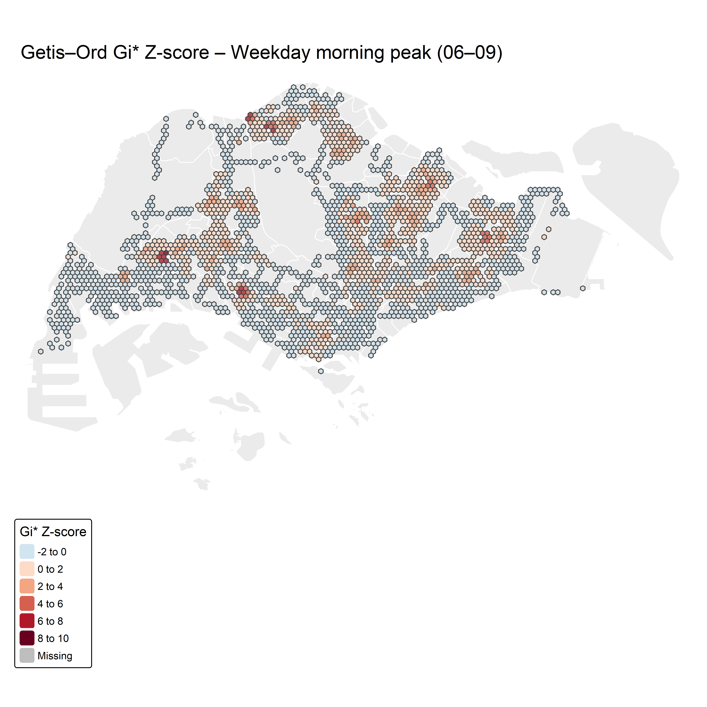
gi_maps_sig$WKDAY_AM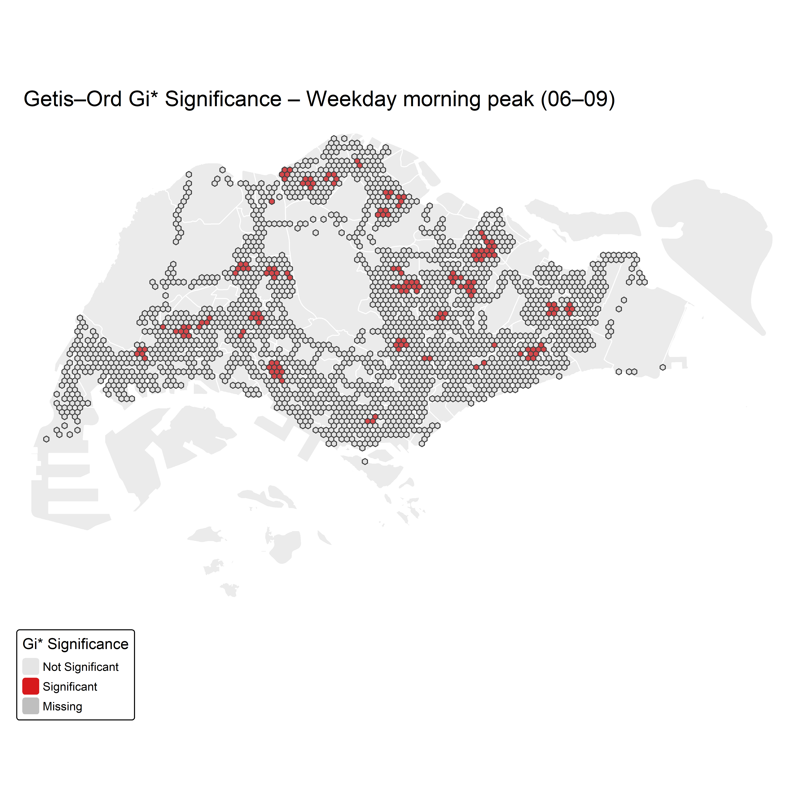
Weekday Morning Peak (6-9)
Significant hotspots (high Gi* z-scores) are concentrated within the northern and northeastern housing estates (Woodlands, Yishun, Sengkang, Punggol, Tampines) and parts of Jurong West. It confirms strong morning departure activity from residential areas. In contrast, areas with low or negative Gi* scores are scattered across industrial and low-density zones, including Tuas, Seletar, and Changi, where origin trip intensity remains consistently weak.
gi_maps_z$WKDAY_PM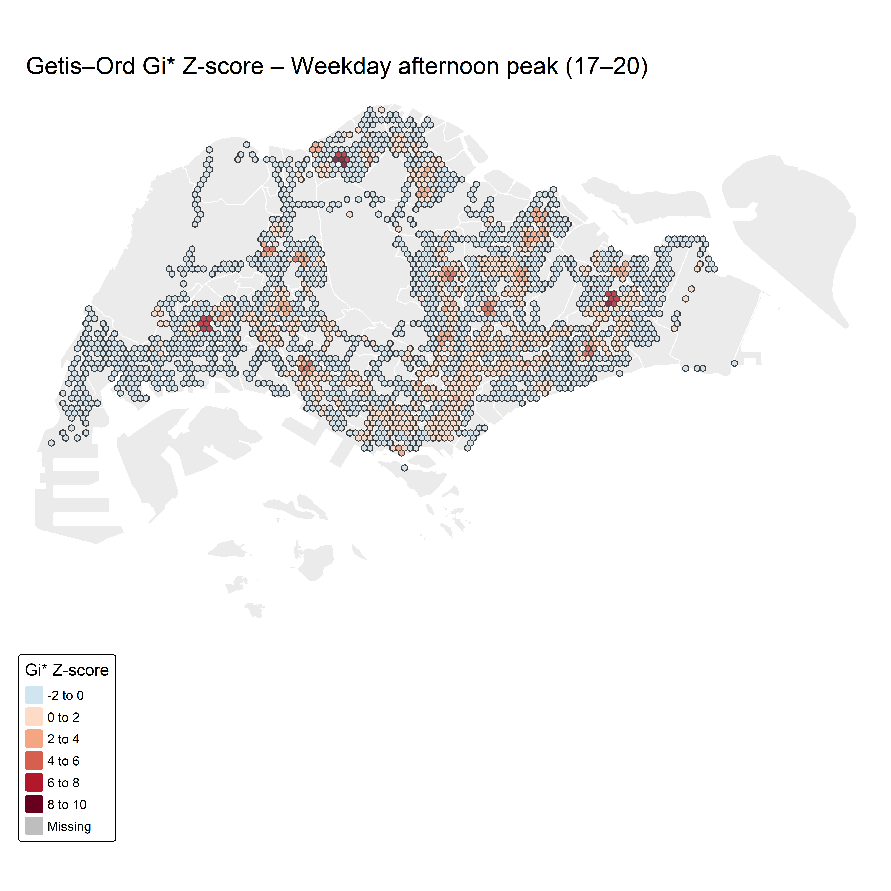
gi_maps_sig$WKDAY_PM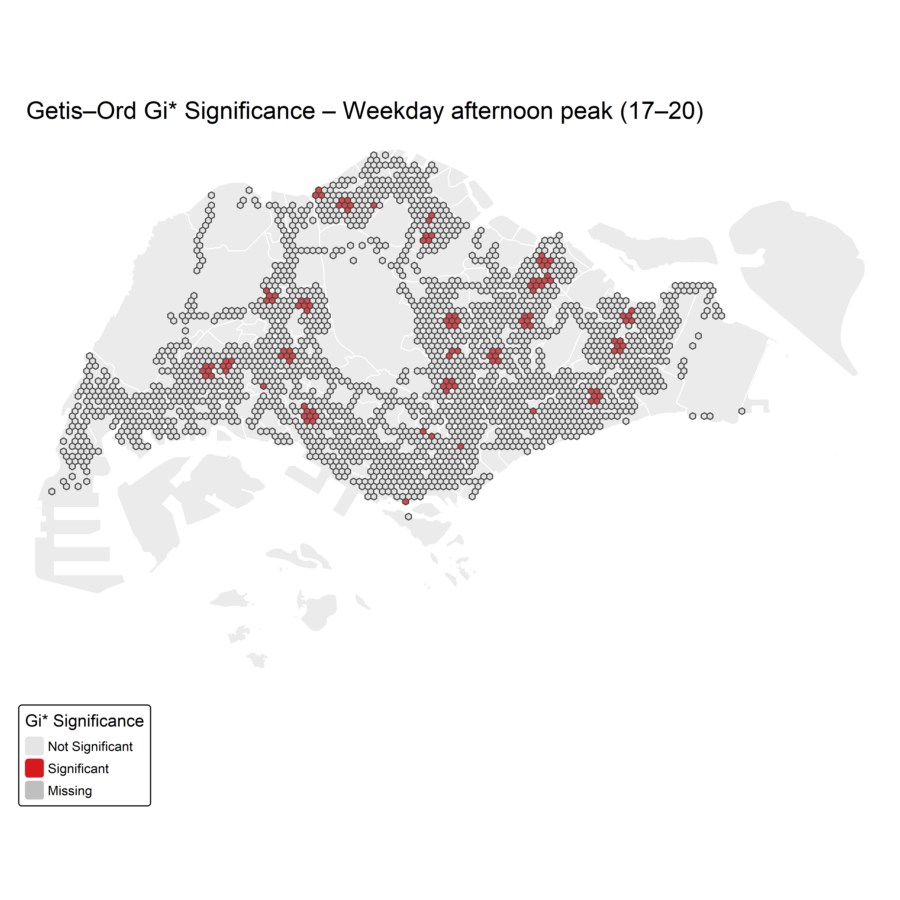
Weekday Afternoon Peak (17-20)
Clusters locate around Tampines, Woodlands, and Jurong East - key regional centres and transport interchanges. These areas exhibit high Gi* z-scores, reflecting strong evening origin intensity as commuters begin their return journeys.
Hotspots are generally fewer and more dispersed compared to the morning peak, again suggesting that evening travel patterns are less spatially concentrated and influenced by diverse trip purposes such as after-work activities or staggered work schedules.
gi_maps_z$WKEND_HOLgi_maps_sig$WKEND_HOL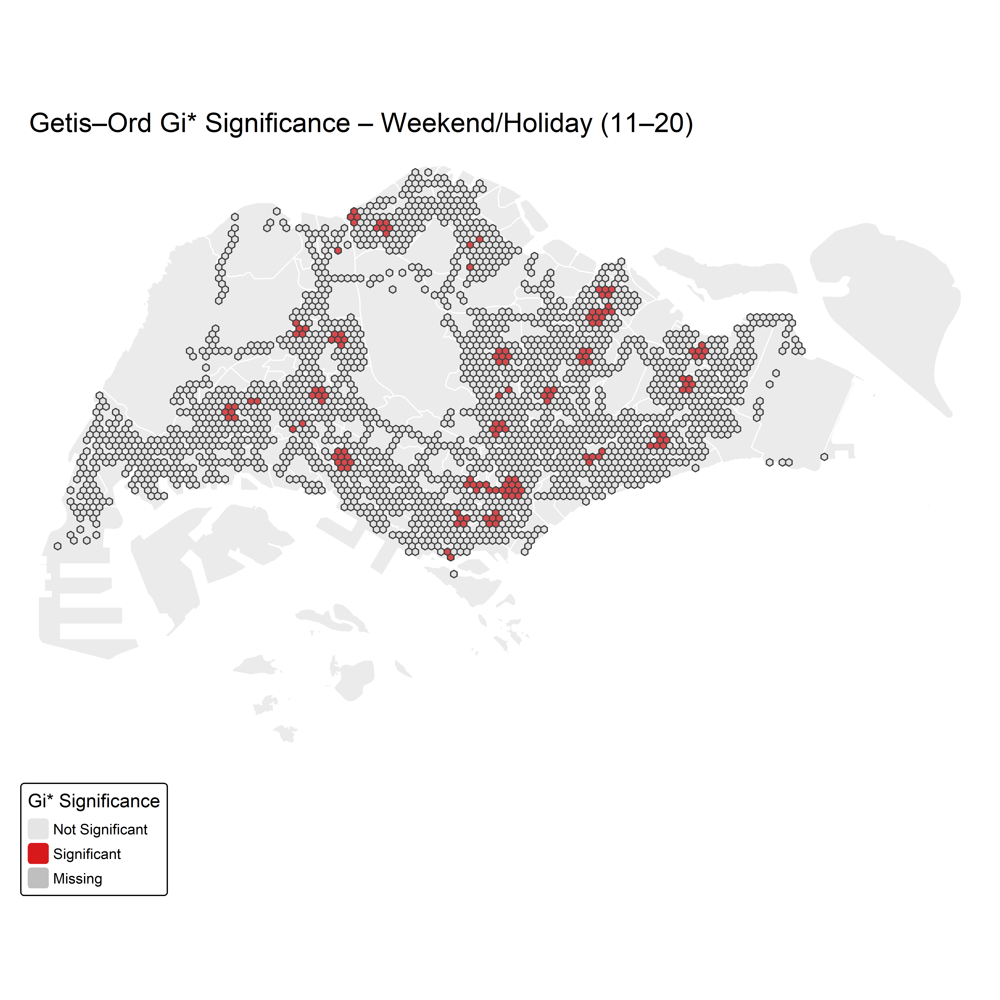
Weekend/Holiday (11-20)
Hotspot clusters differ from weekday patterns and are concentrated around Orchard, Marina Bay, Jurong East, Tampines, and Woodlands, which correspond to major retail, leisure, and town-centre hubs. These areas also exhibit high Gi* z-scores, indicating intense passenger trip origins surrounded by similarly high-value neighbours.
Compared to weekday peaks, weekend hotspots are more dispersed and spatially diverse, extending into suburban and coastal areas such as Pasir Ris or East Coast.
Cold or non-significant areas remain dominant in industrial and sparsely populated regions, consistent with reduced activity in those zones.
Overall, both Local Moran’s I and Getis–Ord Gi* analyses consistently reveal that Singapore’s bus trip generation is spatially structured rather than random, similar to the patterns observed in the earlier exploratory maps.
During the weekday morning peak, strong High–High clusters and Gi* hotspots emerged in northern and northeastern residential towns, confirming these estates as dominant origin zones for outbound commuting.
In the evening peak, clustering intensity declined and became more scattered, with hotspots shifting toward regional centres and interchange hubs (e.g., Tampines, Jurong East), reflecting staggered travel behaviour.
On weekends and holidays, both LISA and Gi* show wider, more dispersed hotspots concentrated around Orchard, Marina Bay, Jurong East, and Pasir Ris, aligning with leisure and retail mobility patterns rather than work commutes.
Notes
Compared with the LISA results, the Gi* approach smooths local variation and better reveals continuous corridors of concentrated demand, particularly along Singapore’s key residential employment axes in the north-to-central and east-to-central directions.
5 Emerging Hot Spot Analysis (EHSA)
Objective
We identify spatio-temporal trends in passenger trip intensity by applying the Emerging Hot Spot Analysis (EHSA) on the Gi* z-scores for each time period separately. This detects zones where significant hot/cold clusters are new, intensifying, persistent, diminishing, or sporadic over time.
5.1 Creating time-space cube & computing Getis–Ord Gi* per time slice
We will separate hexagon datasets for morning peak, afternoon peak, and Weekend/Holiday to analyse temporal clustering patterns independently.
We aggregate total passenger trips for each hexagon (HEX_ID) and hour of day similar as earlier steps, producing a spatio-temporal table of trip intensity for the selected period. Then spacetime() of sfdep ised used to create an spatio-temporal cube. This forms the space–time cube structure used for subsequent Gi* and EHSA analysis.
hours_am <- 6:9
am_st <- trips %>%
filter(!grepl("WEEKEND|HOLIDAY|PH", toupper(DAY_TYPE)),
HOUR_OF_DAY %in% hours_am) %>%
group_by(HEX_ID, HOUR_OF_DAY) %>%
summarise(TRIPS = sum(TRIPS, na.rm = TRUE), .groups = "drop")
all_hex <- hexagon %>% st_drop_geometry() %>% select(HEX_ID)
am_st <- expand_grid(HEX_ID = all_hex$HEX_ID, HOUR_OF_DAY = hours_am) %>%
left_join(am_st, by = c("HEX_ID","HOUR_OF_DAY")) %>%
mutate(TRIPS = replace_na(TRIPS, 0L))
AM_cube <- spacetime(am_st, hexagon, .loc_col = "HEX_ID", .time_col = "HOUR_OF_DAY")
is_spacetime_cube(AM_cube)[1] TRUEWe will compute Gi* statistic within morning peak period and add-in another column in the table.
nb <- spdep::poly2nb(hexagon, queen = TRUE)
lw <- spdep::nb2listw(nb, style = "W", zero.policy = TRUE)
safe_kendall <- function(t, z){
if (length(z) < 3 || dplyr::n_distinct(z) < 2 || var(z) == 0) return(c(tau=NA_real_, p=NA_real_))
kt <- suppressWarnings(cor.test(t, z, method="kendall", exact = FALSE))
c(tau = unname(kt$estimate), p = kt$p.value)
}AM_gi <- AM_cube %>%
as_tibble() %>%
arrange(HOUR_OF_DAY) %>%
group_by(HOUR_OF_DAY) %>%
group_modify(~{
.x$GiZ <- sfdep::local_gstar(.x$TRIPS, nb, lw)
.x
}) %>%
ungroup()5.2 Temporal Trend Detection with Mann–Kendall Test
The Mann–Kendall test identifies monotonic trends in the Gi* z-scores for each hexagon over time slices. We can now apply the Mann–Kendall test to the Gi* z-scores calculated earlier for each hexagon to detect increasing (emerging) or decreasing (diminishing) hotspot trends.
EHSA_AM <- AM_gi %>%
arrange(HEX_ID, HOUR_OF_DAY) %>%
group_by(HEX_ID) %>%
summarise(
n = n(),
tau = safe_kendall(HOUR_OF_DAY, GiZ)["tau"],
p = safe_kendall(HOUR_OF_DAY, GiZ)["p"],
.groups = "drop"
) %>%
mutate(
EHSA = case_when(
!is.na(p) & p < 0.05 & tau > 0 ~ "Emerging / Intensifying Hot Spot",
!is.na(p) & p < 0.05 & tau < 0 ~ "Diminishing Hot Spot",
TRUE ~ "Not Significant"
)
)
Note
A positive τ (tau) indicates an intensifying hotspot, while a negative τ indicates a diminishing trend. Statistical significance was tested at the 5% level. Each hexagon was categorized into one of three EHSA trend types: Emerging/Intensifying, Diminishing, or Not Significant.
Lastly, we merge EHSA trend results with the hexagon geometry for visualization. Maps were produced using tmap().
EHSA_AM_sf <- hexagon %>% left_join(EHSA_AM, by = "HEX_ID")
tmap_mode("plot")
tm_shape(mpsz) + tm_polygons(col="grey92", border.col="white") +
tm_shape(EHSA_AM_sf) +
tm_fill("EHSA",
palette = c("Emerging / Intensifying Hot Spot"="#d73027",
"Diminishing Hot Spot"="#4575b4",
"Not Significant"="#dddddd"),
drop.levels = FALSE,
title = "EHSA Trend (AM by Hour)") +
tm_borders(alpha=.25) +
tm_layout(main.title="Emerging Hot Spots - Weekday morning peak (06-09)",
legend.outside=TRUE, frame=FALSE)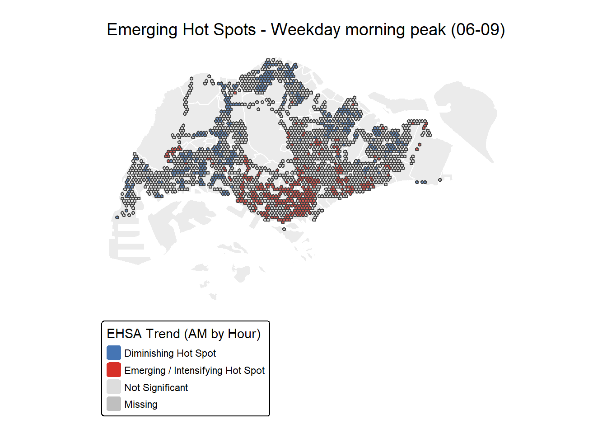
Observation
During the weekday morning peak, strong emerging/intensifying hotspots are concentrated across southern and central parts, especially near major employment and interchange areas such as the CBD, Jurong East, and Queenstown. In contrast, diminishing hotspots appear mainly in the northern and northeastern residential zones, indicating an early surge in departures that stabilises later in the morning.
Next, we will repeat the steps for weekday evening peak and weekend/holiday periods:
Weekday evening peak
hours_pm <- 17:20
pm_st <- trips %>%
filter(!grepl("WEEKEND|HOLIDAY|PH", toupper(DAY_TYPE)),
HOUR_OF_DAY %in% hours_pm) %>%
group_by(HEX_ID, HOUR_OF_DAY) %>%
summarise(TRIPS = sum(TRIPS, na.rm = TRUE), .groups = "drop")
pm_st <- expand_grid(HEX_ID = all_hex$HEX_ID, HOUR_OF_DAY = hours_pm) %>%
left_join(pm_st, by = c("HEX_ID","HOUR_OF_DAY")) %>%
mutate(TRIPS = replace_na(TRIPS, 0L))
PM_cube <- spacetime(pm_st, hexagon, .loc_col = "HEX_ID", .time_col = "HOUR_OF_DAY")gi_pm <- pm_st %>%
as_tibble() %>%
arrange(HOUR_OF_DAY) %>%
group_by(HOUR_OF_DAY) %>%
group_modify(~{
.x$GiZ <- sfdep::local_gstar(.x$TRIPS, nb, lw);
.x
}) %>%
ungroup()EHSA_PM <- gi_pm %>%
arrange(HEX_ID, HOUR_OF_DAY) %>%
group_by(HEX_ID) %>%
summarise(n = n(),
tau = safe_kendall(HOUR_OF_DAY, GiZ)["tau"],
p = safe_kendall(HOUR_OF_DAY, GiZ)["p"],
.groups = "drop") %>%
mutate(EHSA = case_when(!is.na(p) & p < 0.05 & tau > 0 ~ "Emerging / Intensifying Hot Spot",
!is.na(p) & p < 0.05 & tau < 0 ~ "Diminishing Hot Spot",
TRUE ~ "Not Significant"))EHSA_PM_sf <- hexagon %>% left_join(EHSA_PM, by = "HEX_ID")
tmap_mode("plot")
tm_shape(mpsz) + tm_polygons(col="grey92", border.col="white") +
tm_shape(EHSA_PM_sf) +
tm_fill("EHSA",
palette = c("Emerging / Intensifying Hot Spot"="#d73027",
"Diminishing Hot Spot"="#4575b4",
"Not Significant"="#dddddd"),
drop.levels = FALSE, title = "EHSA Trend") +
tm_borders(alpha=.25) +
tm_layout(main.title="EHSA - Weekday afternoon peak (17-20)", legend.outside=TRUE, frame=FALSE)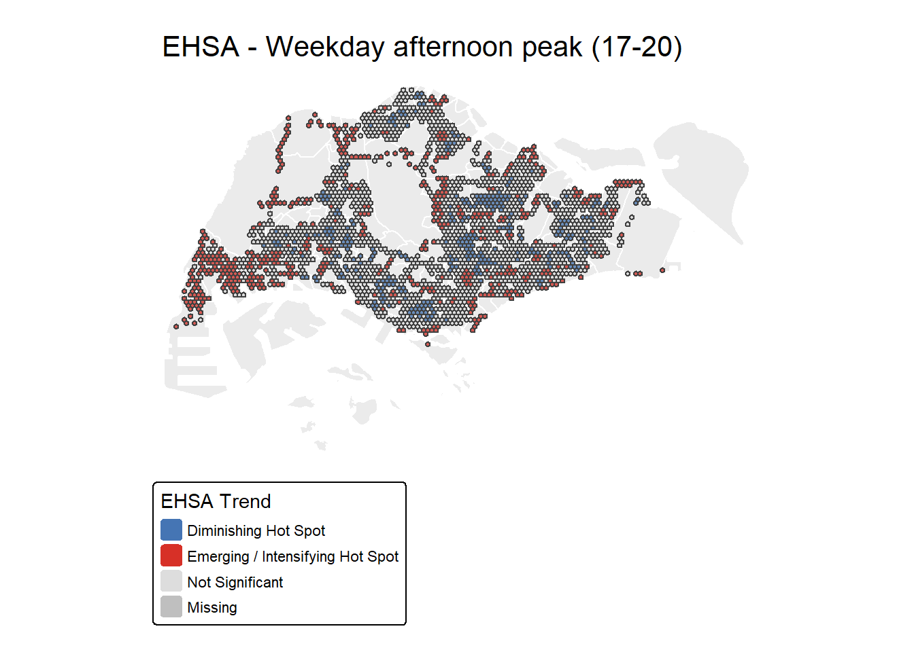
Weekday PM
For weekday evening peak, intensifying hotspots spread along the western and eastern commuter corridors (e.g., Jurong West, Tampines, Pasir Ris), consistent with return-trip movements, while diminishing clusters occur near central areas as travel demand tapers off.
Weekend/Holiday
hours_wknd <- 11:20
wknd_st <- trips %>%
filter(grepl("WEEKEND|HOLIDAY|PH", toupper(DAY_TYPE)),
HOUR_OF_DAY %in% hours_wknd) %>%
group_by(HEX_ID, HOUR_OF_DAY) %>%
summarise(TRIPS = sum(TRIPS, na.rm = TRUE), .groups = "drop")
wknd_st <- expand_grid(HEX_ID = all_hex$HEX_ID, HOUR_OF_DAY = hours_wknd) %>%
left_join(wknd_st, by = c("HEX_ID","HOUR_OF_DAY")) %>%
mutate(TRIPS = replace_na(TRIPS, 0L))
wknd_cube <- spacetime(wknd_st, hexagon, .loc_col = "HEX_ID", .time_col = "HOUR_OF_DAY")gi_wknd <- wknd_st %>%
as_tibble() %>%
arrange(HOUR_OF_DAY) %>%
group_by(HOUR_OF_DAY) %>%
group_modify(~{
.x$GiZ <- sfdep::local_gstar(.x$TRIPS, nb, lw)
.x
}) %>%
ungroup()EHSA_WKND <- gi_wknd %>%
arrange(HEX_ID, HOUR_OF_DAY) %>%
group_by(HEX_ID) %>%
summarise(n = n(),
tau = safe_kendall(HOUR_OF_DAY, GiZ)["tau"],
p = safe_kendall(HOUR_OF_DAY, GiZ)["p"],
.groups = "drop") %>%
mutate(EHSA = case_when(!is.na(p) & p < 0.05 & tau > 0 ~ "Emerging / Intensifying Hot Spot",
!is.na(p) & p < 0.05 & tau < 0 ~ "Diminishing Hot Spot",
TRUE ~ "Not Significant"))EHSA_WKND_sf <- hexagon %>% left_join(EHSA_WKND, by = "HEX_ID")
tmap_mode("plot")
tm_shape(mpsz) + tm_polygons(col="grey92", border.col="white") +
tm_shape(EHSA_WKND_sf) +
tm_fill("EHSA",
palette = c("Emerging / Intensifying Hot Spot"="#d73027",
"Diminishing Hot Spot"="#4575b4",
"Not Significant"="#dddddd"),
drop.levels = FALSE, title = "EHSA Trend") +
tm_borders(alpha=.25) +
tm_layout(main.title="EHSA - Weekend/Holiday (11-20)", legend.outside=TRUE, frame=FALSE)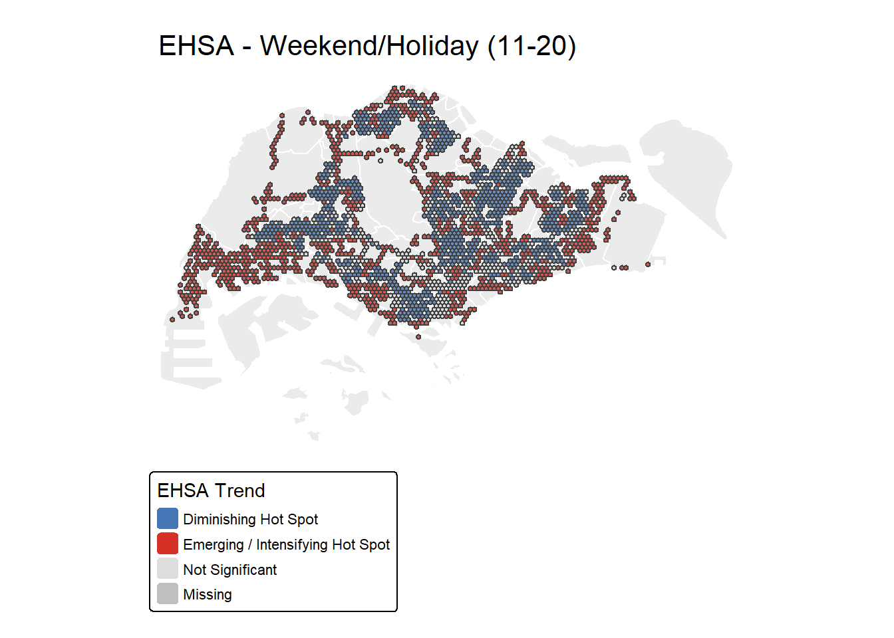
Weekend/Holiday (11-20)
On weekends and holidays, hotspot activity becomes more spatially diffuse, with many emerging clusters near Orchard, Marina Bay, East Coast, and suburban town centres, reflecting recreational mobility rather than commuting.
Overall, EHSA results complement smoothly with LISA results. Trip-generation pattern illustrate the difference between daily work flows and weekend travel flows.
6 Discussion & Insights
6.1 Key Findings
The spatial analyses using Local Moran’s I (LISA) and Emerging Hot Spot Analysis (EHSA) reveal that Singapore’s bus passenger trip generation patterns are spatially clustered and temporally dynamic.
LISA identified stable High-High clusters of trip origins mainly within northern and eastern residential estates such as Woodlands, Yishun, Sengkang, and Tampines, confirming that these towns consistently generate large volumes of morning departures.
In contrast, Gi* and EHSA results demonstrated that hotspot intensity shifts over time, highlighting the temporal evolution of demand within each peak period. Morning peaks featured intensifying hotspots around CBD and interchange nodes, evening peaks showed rising activity in suburban residential zones, and weekend patterns displayed a diffuse spread of leisure-related hotspots near Orchard, Marina Bay, Pasir Ris, and Jurong East.
6.2 Implications for Urban Mobility and Land Use Planning
The results highlight Singapore’s polycentric urban structure, where multiple regional centres and transit nodes act as major trip generation and attraction points.
The morning-evening shift of hotspots demonstrates the efficiency of Singapore’s transport system in supporting two-directional commuting, with outbound and return trips balanced across residential and employment clusters.
From a planning perspective, intensifying hotspots during weekday peaks indicate persistent travel pressure along key corridors, suggesting opportunities to:
Strengthen bus and MRT service capacity in high-growth commuter zones (e.g., Tampines-CBD, Woodlands-Orchard corridors).
Support mixed-use land development to reduce long-distance commuting.
Promote transit-oriented developments (TODs) in areas with emerging or consistent high clustering.
The weekend hotspot dispersion implies rising non-work mobility, reflecting the growing importance of recreational and retail activities. This suggests a need for flexible and adaptive service scheduling, ensuring sufficient coverage in off-peak hours and leisure-oriented destinations.
6.3 Limitations and Future Work
While the analyses provide strong spatial-temporal insights, the EHSA results are constrained by the limited number of hourly time slices in AM and PM windows, which reduce statistical sensitivity in trend detection. Future studies could incorporate finer temporal granularity(e.g., 15-minute intervals) or multi-day data to improve the robustness of temporal trend classification. Integrating social or land-use data could also enhance interpretation by linking spatial clusters to underlying urban functions.
7 Reference
- Kam, T. S. (2024). Emerging Hot Spot Analysis. https://isss626-ay2025-26aug.netlify.app/in-class_ex/in-class_ex05/in-class_ex05-ehsa
- Kam, T. S. (2024). Local Measures of Spatial Autocorrelation. https://r4gdsa.netlify.app/chap10
- Land Transport Authority (LTA). (2019). Land Transport Master Plan 2040: Bringing Singapore Together. https://www.lta.gov.sg/content/ltagov/en/who_we_are/our_work/land_transport_master_plan_2040.html
- Yuen, B. (2011). Urban planning in Southeast Asia: Perspective from Singapore. https://www.researchgate.net/publication/261781057_Centenary_paper_Urban_planning_in_Southeast_Asia_Perspective_from_Singapore
- Diao, M. (2016). Towards sustainable urban transport in Singapore: Policy instruments and mobility trends. https://www.researchgate.net/publication/325289645_Towards_sustainable_urban_transport_in_Singapore_Policy_instruments_and_mobility_trends